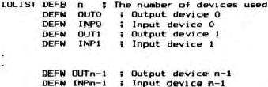

4.5 Formatting
The FMT command performs correctly except in the case FMT
15,n, where the correct number of figures is displayed, but the
mantissa is rounded to one decimal place less than it should be.
example of this occurs in Chapter 4, where the result of
doing:
FMT 15,2: PRINT 567.988
actually gives 5.70E+02, not 5.68E+02 as it should.
Modify 316B (was 03) to 04 E6 0F 3C C9 E5 E6 0F 3C 21 94
10 86 E1
4.6 EVAL
The use of the EVAL function on a NUL$ has a catastrophic
effect.
Modify 24D6 (was 0B) to D5 ED B0 1B
4.7 Output devices
As stated both device 1 and device 2 may be used for a
serial device. However, device 2 does not include the handshake
facility of device 1 to allow for those applications where it is
not required. A simple modification to the IO list would allow
either the removal of the handshake from device 1 or the
inclusion of it in device 2.
4.8 Manual
-
Our daisy wheel printer insists on treating the
exponentiation symbol (up arrow) as a 3/4 – you may find
instances in the manual where this has not been corrected.
-
In Chapter two the cursor movement keys should be indicated
by the appropriate arrows in the single quotes.
-
In Chapter 3 page 19 the assignment LETAA=1+2*3/4 should of
course assign the value 2.5, not 4.5, to AA.
-
The format of the IOLIST given in Chapter 4 in the first 50
copies of the manual is incorrect – the input and output
devices are transposed. The list should read:

-
In Chapter 4 the example program given under the
description of SEP should use the variable MNTH, not MONTH
(MON is a reserved word).